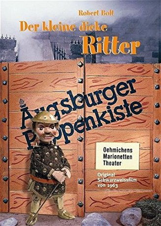

")
 
 IMDB-Wertung: 8.1 / 10
IMDB-Wertung: 8.1 / 10  Metascore:
Metascore: 
Der dicke Ritter Sir Oblong-Fitz-Oblong wird seiner Tafelrunde wegen seiner Tierliebe lästig. Sie schicken ihn auf Ritterfahrt auf die Bolligru-Insel. Dort soll er den bösen Baron Bolligru und seinen Verbündeten Ritter Schwarzherz besiegen. Unterstützt von der Dohle Dollfus, dem Dachs Willy und dem Eiermaler Obidiah gelingt ihm dies - und dazu besiegt er noch einen Feuer speienden Drachen.
Jahr: 1963
Dauer: 29 Minuten
FSK:
Land: West-Deutschland Studio: Augsburger PuppenkisteTonspuren:
Untertitel:
Auflösung: SD (512x384) Größe: 173 MB
Regisseur: Harald Schäfer
Drehbuch: Robert Bolt, Marianne de Barde, Manfred Jenning
Soundtrack:
Darsteller:
Datei: X:\Kinder Serien\Augsburger Puppenkiste\Kleine dicke Ritter\Augsburger Puppenkiste - Der Kleine dicke Ritter - 1 - Baron Bolligru.avi seit 20.11.2019
Festplatte: Kinder-Filme+Trick
 Es gibt insgesamt 56 Filme in der Gruppe 'Kinder Serien'
Es gibt insgesamt 56 Filme in der Gruppe 'Kinder Serien'